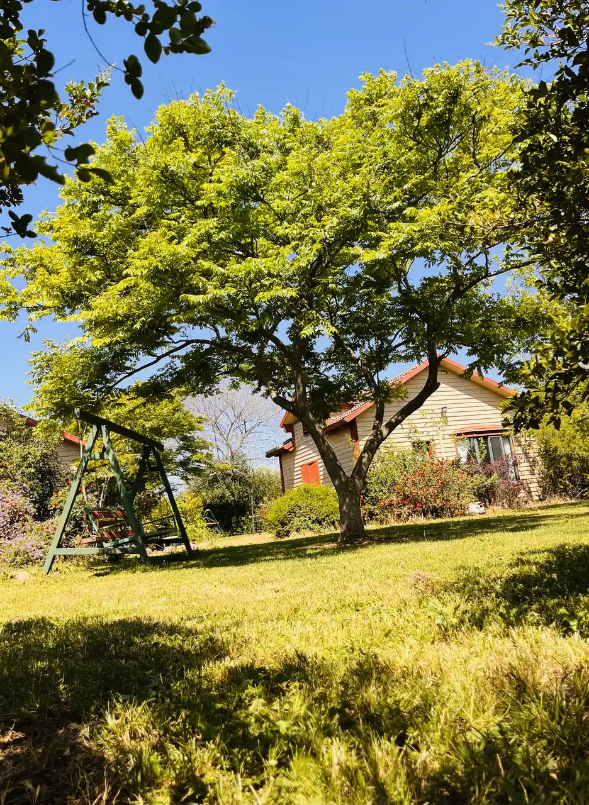

חנוכה, מוצאי 4.12.2026 עד 12.12.2026
אפשר להדליק נרות בחצר. סופגניות, אם העגלה במושב פתוחה. בקצרין העתיקה יש בחורף פעילות של נרות שמן בבית הבד, ומסיק הזיתים בכרמי גולן בנוב נופל על נובמבר–דצמבר.

מושב נוב, רמת הגולן
גינה גדולה, ירוק מסביב ושקט של מושב – פרטיות מלאה לכל המשפחה
שתי בקתות עץ. בכל בקתה זוג + 6 ילדים (8 אנשים). שתי הבקתות יחד: עד 16.
משפחה גדולה לא אמורה להתפצל בין שלושה חדרים. כל בקתה בנויה כך: למטה חדר שינה נפרד להורים, ומעליו גלריה עם מזרונים לילדים. יש מטבחון, פינת אוכל, וג'קוזי פרטי שהוא גם המקלחת.
חתך של הבקתה. עולים לגלריה בסולם.
ירוק מסביב, שקט של מושב, ופרטיות מלאה לכל המשפחה.
מיטה זוגית בקומה התחתונה, לא בגלריה עם הילדים.
הילדים ישנים למעלה, על מזרונים. העלייה בסולם.
ג'קוזי פרטי, והוא גם המקלחת. אין מקלחת נפרדת.
כיור, כיריים ומקרר, ושולחן למשפחה. כלים מביאים מהבית. בבקתה יש כלים חד־פעמיים בסיסיים.
שתי בקתות עץ בתוך גינה גדולה: ירוק מסביב, שקט של מושב ופרטיות מלאה לכל המשפחה. כל בקתה עומדת בפני עצמה: זוג + 6 ילדים בנוחות.
גינה גדולה: מדשאה, ערסלים, עצי פרי, וכרם ענבי יין של המשפחה ליד הבית. ירוק מסביב, ושקט של מושב. בקיץ פתוחה גם הבריכה. בערב אפשר על האש, לא בשבת.
נוב הוא מושב דתי. מגיעים לפני כניסת השבת.
אפשר להשאיר את הרכב בחניה שליד שער המושב, כ־100 מטר הליכה מהבקתות – נוח מאוד למי שרוצה לצאת לטיולים גם בשבת בלי לנסוע בתוך המושב. הרבה אורחים עושים כך.
בבקתה יש פלטה, מיחם ושעוני שבת.
בית הכנסת במרחק של כ־5 דקות הליכה.
יש מקלט בבית.
מטעמי כשרות איננו מספקים כלי אוכל, כך שכל משפחה מגיעה עם הכלים שלה ושומרת על הכשרות שלה. בצימר יש כלים חד־פעמיים בסיסיים.
שבת חתן, שבע ברכות, יום הולדת או כינוס בני דודים: שתי הבקתות יחד מארחות עד 16 איש, עם חצר אחת. כל בקתה נשארת עם החדר והג'קוזי שלה.
לא פירטנו כאן חדר אוכל או מקום ישיבה לארוחה משותפת. אם אתם צריכים לשבת כולם יחד, דברו איתנו ונספר מה אפשר. קבוצה יכולה גם לתאם ערב בגיליס, מסעדת הבשרים שבמושב.
מכבדים שובר נופש מילואים (כאל). אם יש לכם שובר, כתבו לנו ונבדוק שההזמנה מתאימה לו.
לפי ההנחיות של כאל, מימוש השובר נעשה בכרטיס כאל בעסק שמוגדר כלינה. אפשר לפצל לתשלומים ולשלם בשני כרטיסים, והפיקדון יורד מכרטיס אישי. את ההתאמה להזמנה שלכם נסגור בוואטסאפ.
למחירים וזמינות – דברו איתנו בוואטסאפ.
בוקר בנחל, צהריים בכנרת, ערב בג'קוזי. הזמנים הם בערך, ממושב נוב, לפי מדידה בגוגל מפות. הם לא כוללים פקקים או חיפוש חניה.
בלי חבילה סגורה ובלי מחיר מראש. אם אחת העונות מתאימה לכם, דברו איתנו על התאריכים.
אפשר להדליק נרות בחצר. סופגניות, אם העגלה במושב פתוחה. בקצרין העתיקה יש בחורף פעילות של נרות שמן בבית הבד, ומסיק הזיתים בכרמי גולן בנוב נופל על נובמבר–דצמבר.
נחל אל על וגמלא זורמים חזק אחרי הגשם, ואחר כך חוזרים לג'קוזי. לא נכנסים לערוץ כשיש התראת שיטפונות. הבריכה בחצר סגורה בחורף.
הבוסתן ליד הבית. מתאים למי שבא בשביל החצר, לא בשביל הבריכה.
בעונת הבציר מטיילים בכרם המשפחתי. לא קוטפים בו. מסיק הזיתים בכרמי גולן, בנוב, הוא בנובמבר–דצמבר.
כשעה ו-10 דקות נסיעה לאתר החרמון, אם הוא פתוח. כדאי לבדוק מראש. בערב, הג'קוזי בבקתה.
בכל בקתה: זוג + 6 ילדים בנוחות, 8 אנשים. שתי הבקתות יחד: עד 16.
מותרות בחצר בלבד. אף חיה לא נכנסת לבקתה.
הגעה לפני כניסת השבת. אפשר להשאיר את הרכב בחניה שליד שער המושב, כ־100 מטר הליכה מהבקתות. בבקתה: פלטה, מיחם ושעוני שבת. בית הכנסת כ־5 דקות הליכה.
יש מקלט בבית.
הבריכה פתוחה בקיץ בלבד. לא מדליקים אש בשבת.
בנוחות: זוג + 6 ילדים, כלומר 8 אנשים. למטה חדר הורים, ולמעלה גלריה עם מזרונים. שתי הבקתות יחד: עד 16.
בכל בקתה יש ג'קוזי פרטי, והוא גם המקלחת. אין מקלחת נפרדת.
לא. הבריכה פתוחה בחודשי הקיץ, על דק עץ, ומשותפת לשתי הבקתות. הג'קוזי נמצא בתוך הבקתה.
מגיעים לפני כניסת השבת. אפשר להשאיר את הרכב בחניה שליד שער המושב, כ־100 מטר הליכה מהבקתות – נוח מאוד למי שרוצה לצאת לטיולים גם בשבת בלי לנסוע בתוך המושב. בבקתה יש פלטה, מיחם ושעוני שבת. בית הכנסת במרחק של כ־5 דקות הליכה.
מטעמי כשרות איננו מספקים כלי אוכל, כך שכל משפחה מגיעה עם הכלים שלה ושומרת על הכשרות שלה. בצימר יש כלים חד־פעמיים בסיסיים.
חיות מחמד מותרות בחצר בלבד. אף חיה לא נכנסת לבקתה.
כן. כל בקתה מושכרת גם לבד, ואפשר את שתיהן יחד, עד 16 איש. על ישיבה לארוחה משותפת כדאי לשאול מראש.
מכבדים שובר נופש מילואים (כאל). למחירים וזמינות – דברו איתנו בוואטסאפ. אין מחירון בדף הזה.
יין בכניסה, מכונת קפה עם קפה, תה, סוכר וחלב, אינטרנט אלחוטי, מיזוג, מטבחון וג'קוזי פרטי. למחירים וזמינות – דברו איתנו בוואטסאפ.
לא פורסם גיל מינימום. בגלריה יש מזרונים, והעלייה בסולם. כתבו לנו את הגילאים ונגיד אם זה מתאים.
יש מקלט בבית.
הבריכה סגורה. נחל אל על וגמלא יפים אחרי הגשם, קצרין העתיקה מקורה, ואפשר לחזור לג'קוזי. על חימום הבקתה לא פורסם כאן פרט, אז שאלו אותנו.
כרם ענבי יין של המשפחה, ליד הבקתות. מוזמנים לטייל ולצלם. לא לקטיף.
אין כתובת רחוב – אנחנו כ־100 מטר משער הכניסה למושב נוב.
אפשר להשאיר את הרכב בחניה שליד שער המושב, כ־100 מטר הליכה מהבקתות – נוח מאוד למי שרוצה לצאת לטיולים גם בשבת בלי לנסוע בתוך המושב. הרבה אורחים עושים כך.
הניווט מוביל לשער הכניסה למושב. לסיכה חיה על הבית, בקשו מאיתנו בוואטסאפ.
למחירים וזמינות – דברו איתנו בוואטסאפ. אפשר למלא את הטופס, והוא פותח הודעה מוכנה עם התאריכים ומספר האורחים. האתר לא שומר את מה שמקלידים.
דן · 050-460-6674
אפשר גם בלי טופס: וואטסאפ עם הודעה מוכנה או חיוג לדן.
עודכן: 22 באוקטובר 2026. זו לא תעודת עמידה בת״י 5568.
האתר בעברית ובכיוון ימין לשמאל. יש בו כותרות לפי הסדר, קישור לדילוג אל התוכן, טקסט חלופי לתמונות, וכפתורים עם מילים ולא רק אייקון. אפשר לעבור בין הקישורים, השאלות, התפריט והטופס במקלדת, ומוקד המקלדת מסומן. הטקסט בגודל שאפשר לקרוא בטלפון, והכפתורים גבוהים. צבעי הטקסט יושבים על רקע אחיד, לא על התמונה. אפשר להגדיל את הטקסט בכפתור «א+ טקסט». ההעדפה נשמרת בדפדפן שלכם בלבד.
לא ביצענו בדיקת נגישות מלאה, ולא בידינו אישור עמידה בת״י 5568 או ב-WCAG. אם משהו באתר לא עובד לכם, כתבו לדן ונטפל בפנייה.
לא ערכנו סקר נגישות של המבנה. מהתמונות: הגלריה לילדים נמצאת למעלה, ועולים אליה בסולם, כך שהיא לא מתאימה למי שלא יכול לטפס. אם אתם צריכים גישה בלי מדרגות, או כל התאמה אחרת, דברו איתנו לפני ההזמנה.
דן, 050-460-6674, גם בוואטסאפ.
בהתאם לחוק הגנת הצרכן, התשמ״א-1981, ייגבו דמי ביטול של 5% ממחיר העסקה או 100 ₪, לפי הנמוך מביניהם. היתרה תוחזר.
לא יינתן החזר.
חוק הגנת הצרכן לא קובע החזר אוטומטי בגלל מצב ביטחוני, מלחמה או צו 8. במקרים כאלה נקרא כל פנייה בנפרד, וננסה להגיע לפתרון הוגן, כולל דחיית מועד או החזר חלקי לפי הנסיבות.
הביטול בוואטסאפ אל דן, 050-460-6674. התאריך הקובע הוא היום שבו אישרנו את הביטול בכתב.
בקתות צדיק כתמר (ע.מ. 024140618) פועלות לפי חוק הגנת הפרטיות, התשמ״א-1981.
הפרטים שאתם בוחרים לשלוח בוואטסאפ או בטלפון — שם, טלפון ותאריכים — משמשים רק לתיאום האירוח. אנחנו לא מעבירים אותם לאחרים ולא שולחים פרסום בלי הסכמה.
האתר לא משתמש בעוגיות מעקב ולא בכלי סטטיסטיקה. אם הגדלתם את הטקסט, ההעדפה נשמרת בדפדפן שלכם (localStorage) ולא נשלחת אלינו. הטופס לא נשמר באתר: הוא רק פותח את וואטסאפ.
לעיון, תיקון או מחיקה: דן, 050-460-6674.
מושב נוב, רמת הגולן. ההזמנות בוואטסאפ. למחירים וזמינות – דברו איתנו בוואטסאפ.